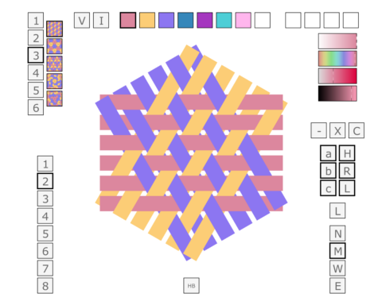

MadWeaver - An interactive madweave program

Click the picture to open the original design. In the flat view, move the pointer over a strip until its black outline appears. Choose a color along the top, then click the strip to paint it.
Controls around the weave
- Top middle · Choose one of eight palette colors. Changing a swatch changes every strip that uses it.
- Upper right · The four sliders adjust opacity, hue, saturation and value. Click a recent color to apply it to the selected swatch. To copy a color, select its swatch, select the destination swatch, then click the leftmost history box.
- Upper left · Pick one of five pattern previews. The buttons set how many colors the pattern uses.
- Lower left · Size gives 3–24 strips in each of three directions. Save your manual strip edits before changing size, pattern or pattern color count.
- Right edge · changes handedness, flips the crossing order, and changes the center. show or hide directions. show or hide hexweave layers.
- Lower right · toggles strip outlines. set narrow, medium, wide or extra-wide spacing.
- Upper left, beside the palette · Choose and click strips to hide them, or and click to reveal them. Click a swatch to return to painting.
- Bottom edge · hides the controls. Click the same spot to bring them back. and switch between your two designs.
Save a design or share an image
Click along the bottom. Save Project downloads an editable HTML file for the active design. Double-click that file to edit offline, or choose Open Project in the editor. Open Project also reads original editable MadWeave SVGs. Save the flat and corner designs separately if you want to keep both.
Choose Export artwork as SVG for a picture with the colors, transparency and crossing order you see in the editor. The download omits the controls. For a PNG, open the artwork in Inkscape and export at the width and height you need. Inkscape PNG instructions
The editor runs in a desktop browser with a mouse or trackpad. The user guide covers corner construction, keyboard controls, browser testing and file formats. The book notes cover weaving with physical materials.